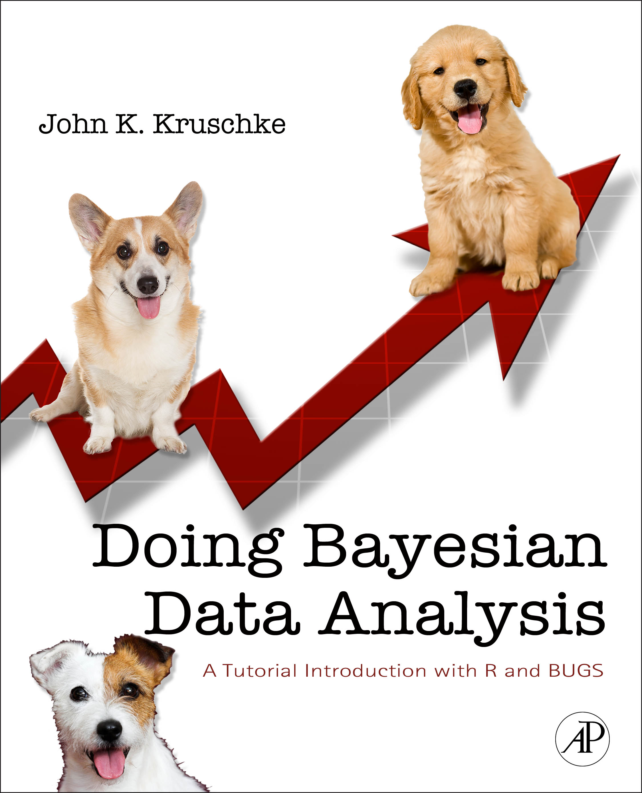

Doing Bayesian Data Analysis
A workshop at the
|
Many fields of science are transitioning from null hypothesis significance testing (NHST) to Bayesian data analysis. Bayesian analysis provides complete information about the relative credibilities of all candidate parameter values for any descriptive model of the data. Bayesian analysis applies flexibly and seamlessly to complex hierarchical models and realistic data structures, including small samples, large samples, unbalanced designs, missing data, censored data, outliers, etc. Bayesian analysis software is flexible and can be used for a wide variety of data-analytic models. This workshop shows you how to do Bayesian data analysis, hands on (with free software called R and JAGS). The workshop will use new programs and examples.
The intended audience is advanced students, faculty, and other researchers, from all disciplines, who want a ground-floor introduction to doing Bayesian data analysis. No specific mathematical expertise is presumed. In particular, no matrix algebra is used in the workshop. Some previous familiarity with statistical methods such as a t-test or linear regression can be helpful, as is some previous experience with programming in any computer language, but these are not critical.
Pre-Registration is required; see contact information below.
Course Topics include the following. There will be updated software and examples for 2014!
|
|
| A posterior probability distribution for parameters that describe two groups, showing complete distributions of the difference of means (right middle), the difference of standard deviations, the effect size (right bottom), and posterior predictive check (right upper). |
For more information about Bayesian data analysis, with links to articles and videos, and for information about the instructor, scroll to the bottom of this page, or click here!
The workshop is open and there is no fee, but pre-registration is required. If you plan to attend, please enter your contact information in this linked form as soon as possible and at least six weeks in advance. If you have administrative or logistical questions, please contact Prof. Hans Olav Melberg, at hans.melberg@gmail.com. The instructor has no control of registration.
The venue is tentatively planned to be Auditorium 2, Harald Schjødrups hus, Forskningsveien 3A.

|
It is important to bring a notebook computer to the workshop, so you can run the programs and see how their output corresponds with the presentation material. Please install the software before arriving at the workshop. The programs are being updated, so please check here a week before the workshop to be sure you have the most recent programs. For complete installation instructions, please refer to this blog entry.

Why go Bayesian? Sciences from astronomy to zoology are changing from null-hypothesis significance testing to Bayesian data analysis, because Bayesian analysis provides complete information with flexible application to numerous models. Read more:
Above: A brief video that describes Bayesian estimation for comparing two groups, and how Bayesian estimation supersedes the t test.
*Your click on this link constitutes your request to
the author for a personal copy of the article exclusively for
individual research.
 Who is the instructor? John
Kruschke is eight-time winner of Teaching Excellence Recognition
Awards from Indiana University, where he is Professor of Psychological
and Brain Sciences, and Adjunct Professor of Statistics. He has
written an introductory textbook on Bayesian data
analysis; see also the articles linked above. His research
interests include the science of moral judgment and Bayesian data analysis. He received the Troland Research Award from the National
Academy of Sciences, and the Remak Distinguished Scholar Award from Indiana University. He has been on the editorial boards of several scientific journals, including Journal of Mathematical Psychology, Psychological Review, and Journal of Experimental Psychology: General, among others.
Who is the instructor? John
Kruschke is eight-time winner of Teaching Excellence Recognition
Awards from Indiana University, where he is Professor of Psychological
and Brain Sciences, and Adjunct Professor of Statistics. He has
written an introductory textbook on Bayesian data
analysis; see also the articles linked above. His research
interests include the science of moral judgment and Bayesian data analysis. He received the Troland Research Award from the National
Academy of Sciences, and the Remak Distinguished Scholar Award from Indiana University. He has been on the editorial boards of several scientific journals, including Journal of Mathematical Psychology, Psychological Review, and Journal of Experimental Psychology: General, among others.
Recommended textbook: Doing Bayesian Data Analysis: A Tutorial with R and BUGS. The book is a genuinely accessible, tutorial introduction to doing Bayesian data analysis. The software used in the workshop accompanies the book, and many topics in the workshop are based on the book. For reviews of the book at Amazon.com, click here. Further information about the book can be found here.
Bayesian data analysis is not Bayesian modeling of cognition. Data analysis involves "generic" descriptive models (such as linear regression) without any necessary interpretation as cognitive computation. The rational way to estimate parameters in descriptive models is Bayesian, regardless of whether or not Bayesian models of mind are viable. The concepts and methods of Bayesian data analysis transfer to other Bayesian models, including Bayesian models of cognition. Read more at this blog entry.
This page URL: http://www.indiana.edu/~jkkteach/WorkshopOslo2014.html